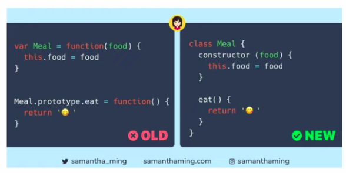

É um paradigma de programação baseada em protótipo, que é um estilo de programação orientada a objetos.
A reutilização de comportamento é realizada por meio de um processo de reutilização de objetos existentes que servem como protótipos.
Todos os objetos herdam propriedades e métodos de um prototype. O objeto Object.prototype está no topo desta cadeia.
Esse modelo também pode ser conhecido como programação prototípica, orientada a protótipos, sem classes ou baseada em instâncias.
Aplicável em todos os tipos de dados não primitivos.
A herança é feita por meio de protótipos, cadeia de protótipos, onde vai herdando propriedades e métodos até o topo da cadeia.
O topo da cadeia é a classe Object.
- prototype: É uma variável que armazena as definições do objeto.
Possui todas as propriedades e métodos herdados.
- __proto__: Referência a variável prototype.
Aponta para um prototype, que é criado a partir de uma função constructor.
- constructor: É o nome da função que cria o objeto. Aponta para o prototype.
Tudo isso o JS faz por debaixo dos panos.
Classes não existem nativamente no JS, elas são uma Syntatic Sugar, ou seja, uma sintaxe feita para facilitar a escrita. Criada no ES6.
Todas as classes são objetos e a herança se dá por protótipos.
É uma forma simplificada para funções "fábricas" (Factory Functions), que é uma função que retorna um objeto, instância da classe especificada.
class é uma palavra chave para declarar uma classe. É super sintaxe das funções.
OBS: Por baixo dos panos é criado um prototype para cada classe.
Link para testar e verificar em: https://babeljs.io/
JS não tem modificadores de acesso, porém existe uma implementação no ES6 que permite a definição de modificadores de acesso na versão 12
Node.js, mas, ainda não tem suporte nos browsers.
- Public
- Private
#: É o caractere que determina o modificador de acesso PRIVADO.
Class-based vs. prototype-based languages
- Linguagem orientada à objetos baseada em classes
Baseiam-se no conceito de duas entidades distintas: classes e instâncias.
Uma classe é abstrata, pois define todas as propriedades que caracterizam um determinado conjunto
de objetos.
Por exemplo, a classe Employee pode representar o conjunto de todos os funcionários.
Uma instância (objeto), por outro lado, é a instanciação de uma classe.
Por exemplo, Victoria poderia ser uma instância da classe Employee, representando um determinado
indivíduo como funcionário.
Uma instância tem exatamente as mesmas propriedades de sua classe pai (nem mais, nem menos).
- Linguagem orientada à objetos baseada em protótipos
Baseia-se no conceito de objeto, não faz distinção entre classe e instância.
Tem a noção de um objeto prototípico, um objeto usado como modelo para obter as propriedades
iniciais de um novo objeto. Qualquer objeto pode especificar suas próprias propriedades,
quando você o cria ou em tempo de execução.
Além disso, qualquer objeto pode ser associado como protótipo de outro objeto,
permitindo que o segundo objeto compartilhe as propriedades do primeiro objeto.
Class-based vs. prototype-based languages
|
| Categoria |
Baseado em classe (Java) |
Baseado em protótipo (JavaScript) |
| Classe x instância |
Classe e instância são entidades distintas. |
Todos os objetos podem herdar de outro objeto. |
| Definição |
Defina uma classe com uma definição de classe; instanciar uma classe com métodos
construtores. |
Defina e crie um conjunto de objetos com funções construtoras. |
| Criação de um novo objeto |
Crie um único objeto com o newoperador. |
Mesmo |
| Construção da hierarquia de objetos |
Construa uma hierarquia de objetos usando definições de classe para definir subclasses
de classes existentes. |
Construa uma hierarquia de objetos atribuindo um objeto como o protótipo associado a uma
função construtora. |
| Modelo de herança |
Herde propriedades seguindo a cadeia de classes. |
Herde propriedades seguindo a cadeia de protótipos. |
| Extensão de propriedades |
A definição de classe especifica todas as propriedades de todas as instâncias de uma
classe.
Não é possível adicionar propriedades dinamicamente em tempo de execução. |
A função construtora ou protótipo especifica um conjunto inicial de propriedades.
Pode adicionar ou remover propriedades dinamicamente para objetos individuais ou para
todo o conjunto de objetos. |
Classes são mais rigidas e protótipos são mais flexíveis.
Como era no ES5 vs. como é no ES6 com a criação da Syntatic Sugar.
